Tic Tac Toe in Scratch

Design
First Of all we will start with designing. Firstly at well go in paint sprite option and then we will paint the coloums and rows or you can download it from the files part. It's better to create your own. After which take button of any kind from choose sprite option or design your own. Next we are going to design two more costumes from the costumes tab for the button. Either you download it
form the files area or design your own, it is just a X and a O. It's better if you design your own.
After you have done downloading and setting costumes up next we are going to place it some thing like the picture shown below:
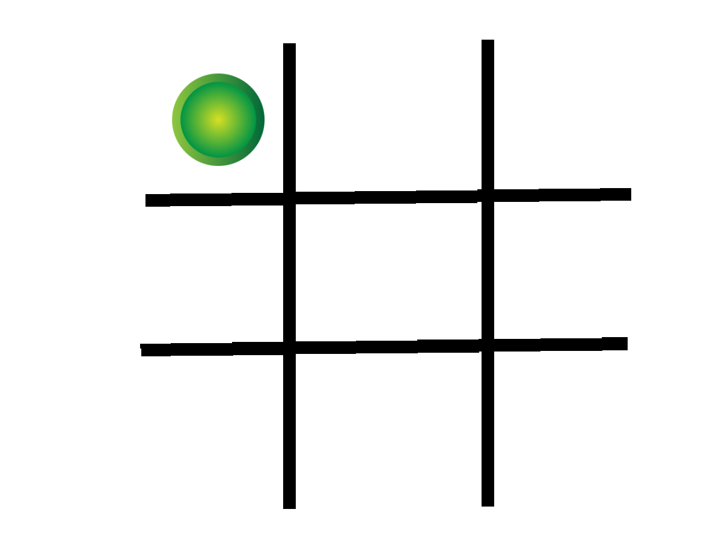
Simple Part
This is an optional part you may skip it. It is the part where we will add a background sound. It is upto you if you want to add some sound to make it more interesting. So, lets begin.
First you will have to take this 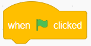 block and place it in the block area. Next take a forever loop block to place it below the block. After which we will add the 'play sound until done' block inside the
forever loop.Now select the sound will you want to play or use the provided below:
After everything it should look like this:
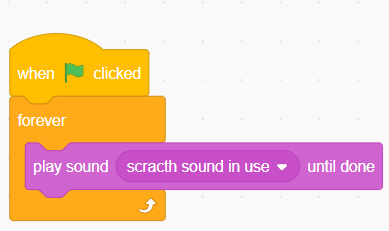
Variables
Now the most intersting part. Here we will create variables and set them to zero 0 on run.So first lets set our calculations real quick.
so what are the winning possibilities in a tic tac toe game. lets see a diagram to understand.
.png)
These are the only possibilities of winning. The top row (TO & TX), the middle row (MO & MX), bottom row(BO & BX), vertically right, middle, left and Angularly Right to left and left to right.
There're 8 winning possibilities. So we will make 8 variables for each X & O. So lets make all the variable.
Click on make variable and create the variables, it's upto you what you name it. In our codes it is:
- For the Top row: TO & TX
- For the middle row: MO & MX
- For the bottom row: BO & BX
- For the vertical right: VRO & VRX
- For the vertical middle: VMO & VMX
- For the vertical left: VLO & VLX
- For angular right to left: ALO & ALX
- For angular left to right: ARO & ARX
After you have created of of the variables it shold look like this (ignore the variable 'ok'):

Lets keep it aside for some time. Still then lets make the other variable required for determining the X or O (player). It will determine what will come next X or O. Lets make the variable for that.
click on make a variable and name it as X or O. Name preffered by me. After we have created all the variables, pull block and duplicate it 16 times and place it above the foreverloop. Make sure all the variables are set to 0 on run. Pull out another and set the variable(X or O)to 0 on run.
It should look some thing like this:
block and duplicate it 16 times and place it above the foreverloop. Make sure all the variables are set to 0 on run. Pull out another and set the variable(X or O)to 0 on run.
It should look some thing like this:
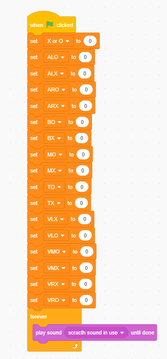
In this part we will code the existing button and duplicate it eight times. Before doing that lets start of with the coding.
we will code the buttons such that when clicked for the first time it shows 'O' and the next it shows 'X'. Lets do this much first.
First we will take a "when this sprite clicked" block and place a 'if...else' block under it. And then we will add the function which will determine whether it will be X or an O.
Then we will go to the operators and take a block and place the ‘X or O’ variable in the first blank and set the next black to 1. Inside we will set the variable 'X or O' to 0 and switch to the costume including the X, for instance,'costume1'. Now for the else part use 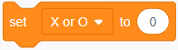 and set the black area as 1 block and set the costume to the costume including the O.
If you have done till this much correctly it should look some thing like this:
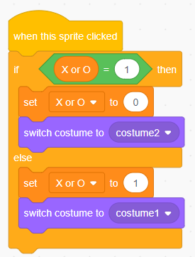
Now lets start working with the other variables. Lets understand something first:
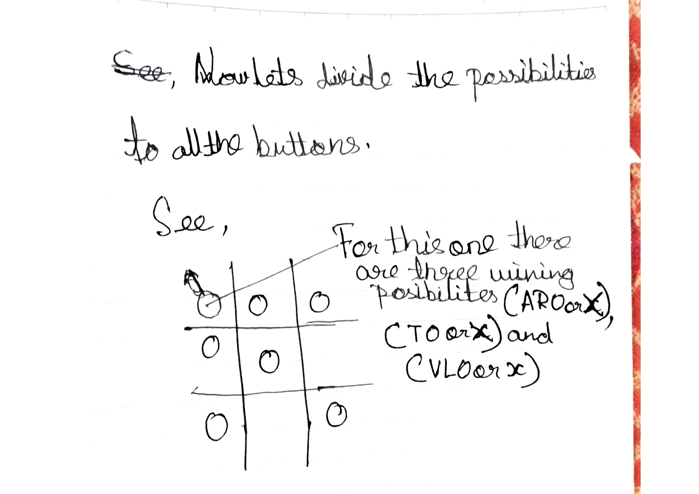
Button:
- On every corner have 3 winning possibilities.
- In the center have 4 winning possibilities.
- Of all the other have 2 winning possibilities
Now we know all the possibilities. Now we will change the possible variables by 1 on click. now in Else part we will give the variable related to O and in the if part we will give the variable related to X.
After all of the code is set in the button duplicate it and that area should look like this:
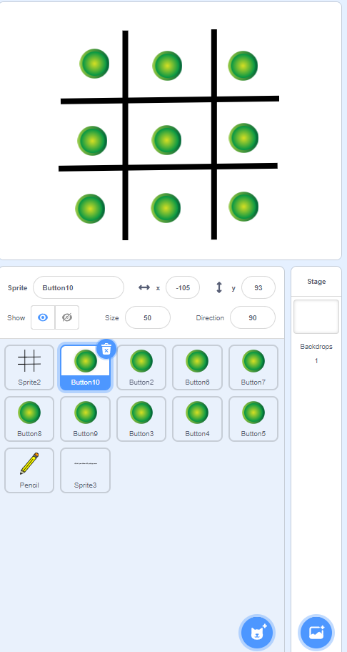
The code should look some thing like this:
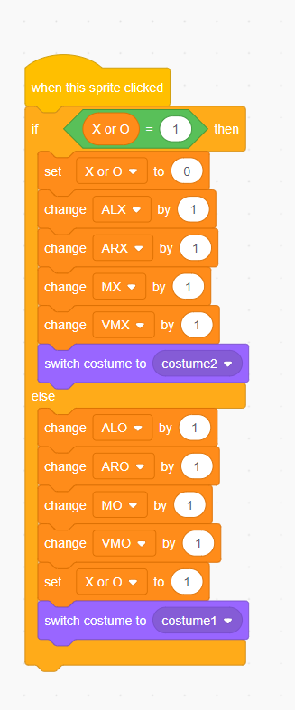
Next we want to reset everything when run again. So we will Set that when clicked we will set the button back to button's costume.
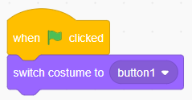
Now lets draw the line on winning. First, add an extension ‘pen’ and a sprite, for instance, a pencil. Then go the costumes tab and select the pen by drag selecting and placing the pencil tip on the centre. Now go to blocks, and make your own block from my blocks. And define it. First use a forever loop and place 8 ‘if’ blocks. Now take 2 equals to block and place two variable of the same row of X and O and set the location and perfect angles and set pen down and draw a line of 350 steps. Do the same for the other variables.
One of the set of instruction will look something like this:
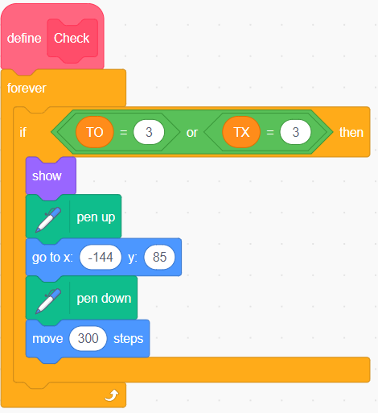
The whole code will look like this:
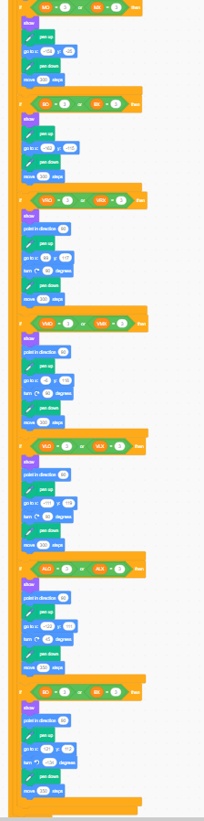
These code will draw a line on winning. Next we want to reset it again on run, means to erase all and hide the pencil and set to a location which is inaccessible. So lets do it. Take block and place hide block then a point to ___ direction block, place erase all place pen up block then a go to X___ Y___ block .And add the the your made block after it. Few blocks are
optional like set pen size to _______ and set pen color.
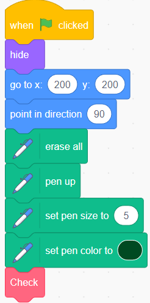